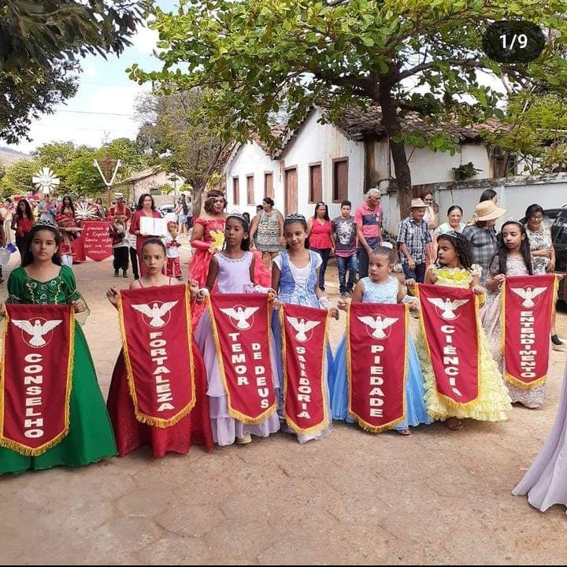
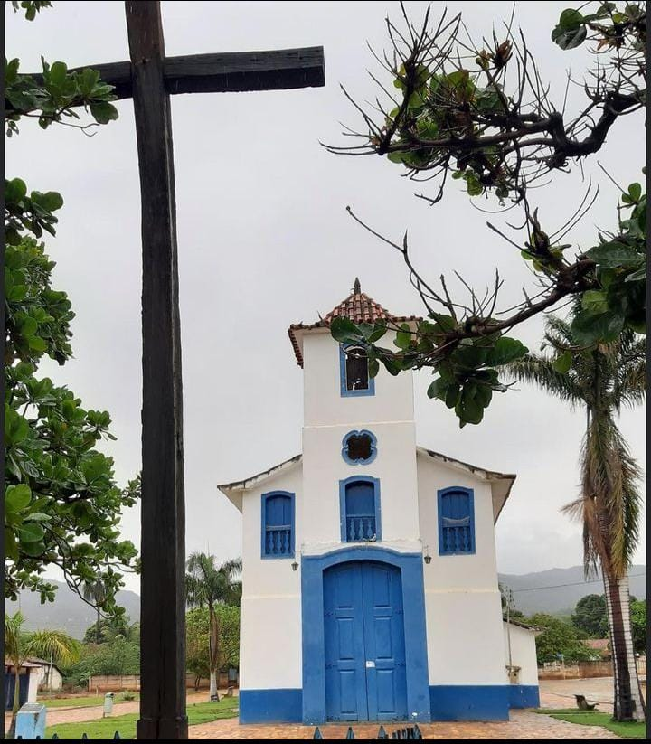
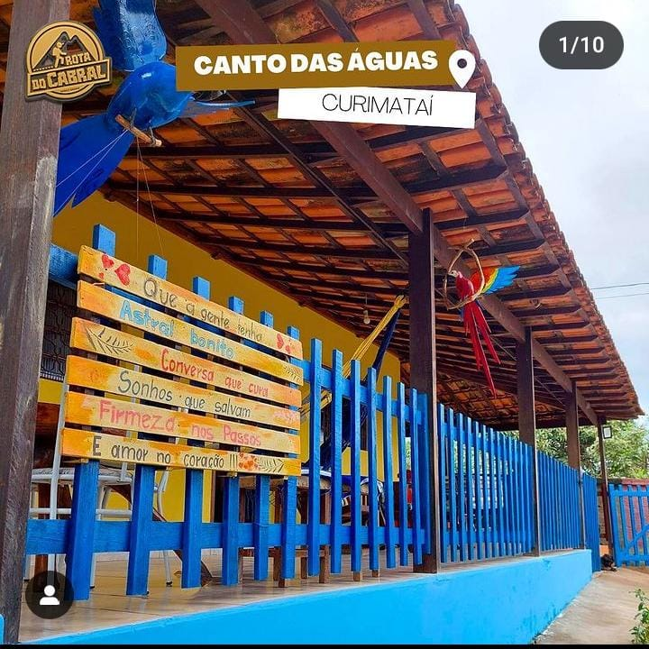

Conheças nossas maravilhas !!
Embrenhe-se na natureza: onde cachoeiras sussurram segredos, moinhos contam histórias ao vento, e trilhas revelam caminhos que levam à serenidade. Descubra a magia que aguarda em cada queda d'água, no girar dos moinhos e nos mistérios das trilhas que conduzem a experiências inesquecíveis.
passe o mouse TRADIÇÃOEntre tradições que ecoam em festas vibrantes, do Divino Espírito Santo, festa do Carneiro e à magia da Folia de Reis. Cultura que pulsa, raízes que se entrelaçam, e a alegria que transcende o tempo.
passe o mouse CULTURAOnde a cultura floresce como as paisagens locais. Raízes profundas, tradições vivas, e uma riqueza cultural que pulsa no coração da comunidade
passe o mouse POUSADASEm Curimataí, as pousadas são mais que acomodações, são portas para uma hospitalidade acolhedora. Descubra o conforto em meio à natureza, onde cada estadia é uma experiência única e calorosa, como as cores do pôr do sol que abraçam esse pedaço especial do mundo.
passe o mouse CONTATOS passe o mouse